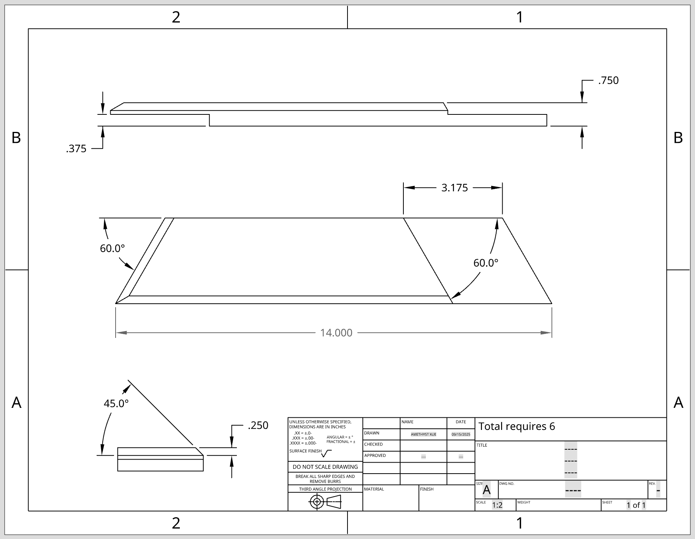

A table which appears to float.
Of course, it's not magic. It's being supported entirely by tension. The load on the table's top surface is transported down the upper arm, which delivers the force through a cable onto the lower arm, which rests on the floor.
3D Modeling
September 15, 2025 • Step 1
Disappointed by the availability of plans, I decided to make my own.
I made this 3d model in OnShape. The design is heavily based on this YouTube video, but I made some changes to improve the strength of the tensegrity arms. I also replaced the edge fillets with chamfers because they looked more angular and futuristic.
Technical Drawing
September 17, 2025 • Step 2

The next step was to draw usable plans from my design.
Also using OnShape, I pulled out each of the main components and made a cut list with precise measurements. Unlike the 3d model, these can be printed out and referenced easily while cutting the wood.
Making Arm Templates
September 18, 2025 • Step 3

To make a pair of identical arms, I made a template out of hardboard.
I wanted to make sure each tensegrity arm was exactly the same size and shape, so I cut out a template on the bandsaw after measuring everthing out with a ruler and protractor.
Cutting the Arms, Part 1
September 26, 2025 • Step 4

I squared up a piece of oak to 2" by 3", then traced my template onto it. The dimensions of the wood were slightly larger than I planned, but I figured it would end up helping with the strength of the piece, so I changed some of my plan dimensions to match the wider boards.
Afterwards, I measured out the 22° angle for each end and cut it on the miter saw. The cuts left rough borders, so I smoothened them with a file before resurfacing on the joiner.
More to come soon...